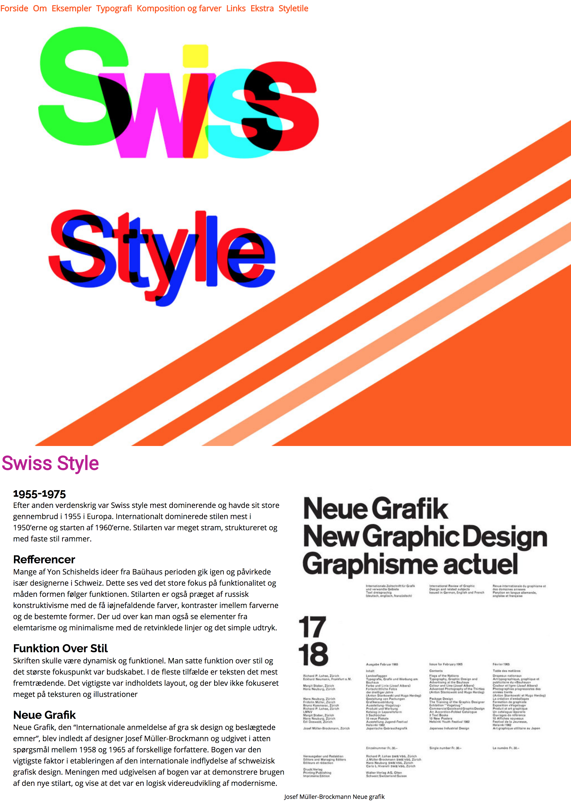

I min gruppe beskæftigede vi os med stilen Swiss style som er præget af enkelthed og matematik. Det var en stilart som jeg fandt stor inspiration i. Fagligt var dette min første gang med HTML, CSS og Adobes Indesign og Photoshop. Til projektet lærte vi også meget om skrifttyper og om hele idégenereringsprocessen med både moodboard og skitser.
Opgaven gik ud på at lave en hjemmeside om pågældende stilart efter et fælles layout diagram ved brug af HTML og CSS.
I version 1 var det ren Html, og i version 2 blev der tilføjet CSS og der blev arbejdet nærmere med flexbox og layout diagrammet blev implementeret ydeligere.
Opgave 01.04.04 skulle være responsiv og have implementeret et splashbillede. Det var en stor udfordring for mig at få hjemmesiden responsiv til de tre formater mobil, tablet og desktop, især billederne drillede en del, men det var også en del af en større læringsproces.
